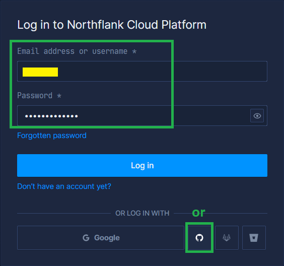

Troubleshoot Northflank
Site doesn’t open after build
upstream connect error or disconnect/reset before headers. retried and the latest reset reason: remote connection failure, transport failure reason: delayed connect error: 111
You probably need to wait until the deploy is finished. Refresh the page after 5 minutes.
Restart
a) Log into Northflank and select your Nightscout project, then its service.
{kind=link}
b) Click Rollout Restart and confirm Restart Service.
Wait until restart is complete with the cloud status Running.

If your site crashes again shortly after, verify your database is not full if you use MongoDB Atlas.
Backup your site variables
Having a copy of your variables is very important since some of them are vital to your site like MONGODB_URI and your access to it like API_SECRET.
Open Northflank and login with your username or with GitHub.
{kind=link}
Select Services then your Nightscout project.
{kind=link}
Select Environment then Env.
{kind=link}
Copy the contents of the Environment variables and paste it into a text editor.
{kind=link}
Warning
Save this file in a safe place.Call it northflank.env as it’s your Northflank environment variables.
Restore your site variables
You can use this method to restore Northflank variables (see above how to backup), but also to restore them from Railway or Heroku if migrating (follow the platform name link to see how to export them).
Open Northflank and login with your username or with GitHub.
Select Services then your Nightscout project.
Select Environment then Env.
Delete all contents, open your backup file (the .env you generated when doing backup) and copy/paste all in the editor area. Click Update and restart bottom right.